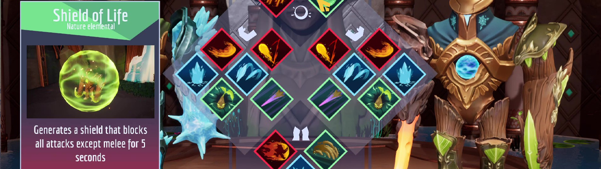

Titan's Tribute - UE4 game
 The Team in no particular order:The vision and prototyping phase: The journey of "Titan's Tribute" began with my game idea and design. In the initial stages, I dedicated two weeks to crafting a prototype and an initial pitch for the project. During this early phase, the team consisted of myself, the character artist, and the environment artist. Together, we laid the foundation for what would become an exciting arena fighter. The character artist focused on creating prototype character meshes, while the environment artist crafted the prototype arena. Beyond that, I took the lead in developing the rest of the prototype, shaping the core gameplay mechanics and design.
About Titan's Tribute:
Our mission with "Titan's Tribute" was crystal clear: create a 1v1 PvP arena fighting game that lets players unleash their inner titan and dominate their foes with customized abilities. In this local split-screen showdown, players can opt for a controller or the classic combo of one controller and one keyboard and mouse. We were driven by a singular goal—deliver fast-paced combat with enduring replay value.
Rather than going the traditional route of choosing predefined characters or heroes, we went all-in on ability customization. In "Titan's Tribute," you have four limbs to customize: the core/torso, left and right arms, and legs. Each ability is tied to an element, transforming your titan's appearance as you select different abilities. But here's the magic: customization empowers players to build their unique playstyle. Picture this: you could embrace the role of a long-ranged "sniper," picking off opponents from a distance, or opt for a nimble build focused on close-quarters combat and massive damage. Personally, I lean towards a mid-range build, centering on map control and high burst-damage tactics.
All of this customization unfolds within an immersive, multi-level fighting arena, where players can unleash their unique abilities. Our battle arena boasts engaging and finely detailed stylized graphics, enhancing the epic nature of the clashes.
We've designed "Titan's Tribute" with a specific audience in mind—not casual gamers, but hardcore fighting game enthusiasts. Our game is for those who aspire to be the best, those who yearn to showcase their mastery and rise to the challenge. With "Titan's Tribute," we aim to provide an arena where players can truly prove their mettle.
Note: Unfortunately, we regret to inform you that the source code for the project has been lost due to a corruption in the backup hard drive.